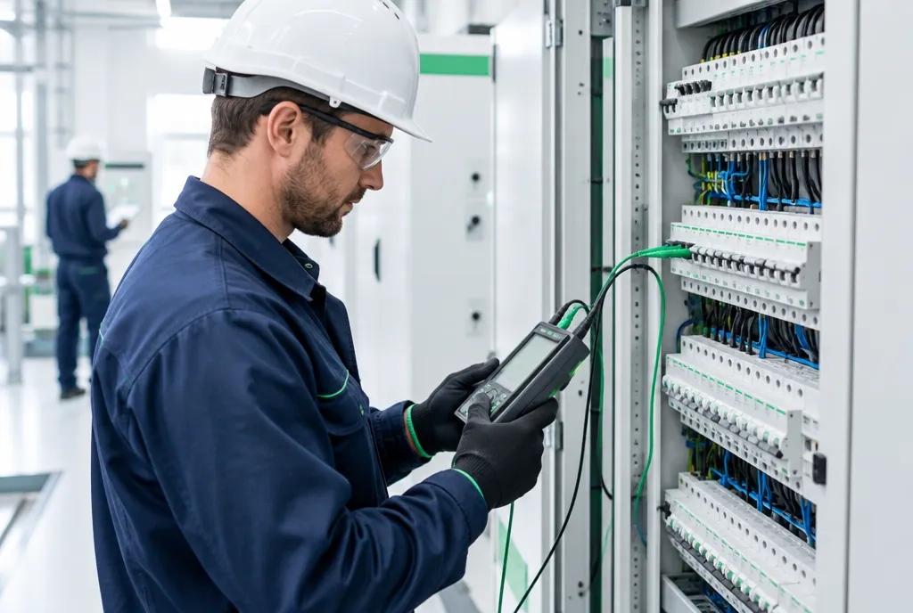
Villamos biztonsági felülvizsgálat (VBF)
Érintésvédelem és tűzvédelem egy eljárásban – 3 évig érvényes minősítő irattal.
RészletekÉrintés-, tűz-, villám- és robbanásvédelem, lakások, napelemes rendszerek, energiatárolók és data centerek felülvizsgálata. Pontos mérés, gyors kiszállás és hatóság előtt is helytálló dokumentáció.
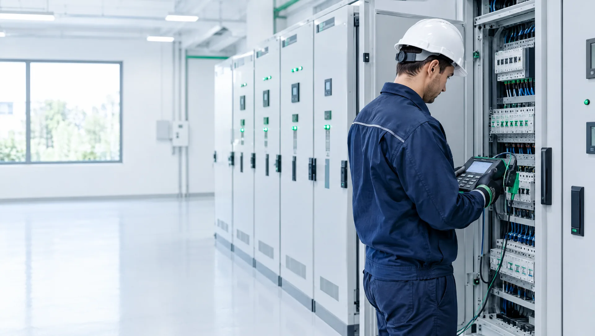
Az érintésvédelemtől az energiatárolókig – precíz méréssel és a hatóság előtt is helytálló dokumentációval.

Érintésvédelem és tűzvédelem egy eljárásban – 3 évig érvényes minősítő irattal.
Részletek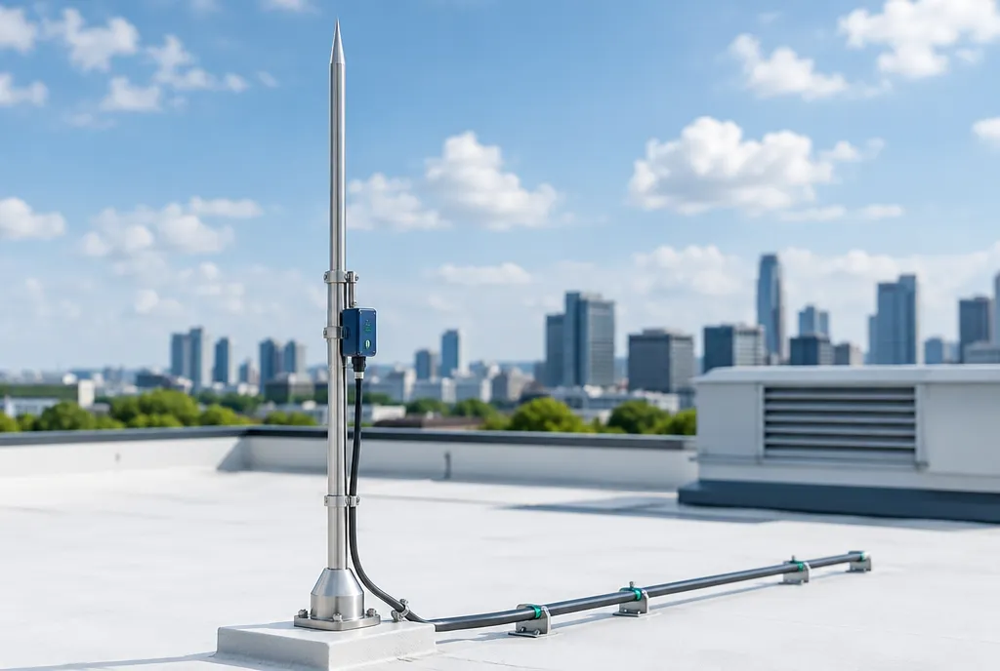
Egyetlen villámcsapás milliós kárt okozhat. Mi megelőzzük.
Részletek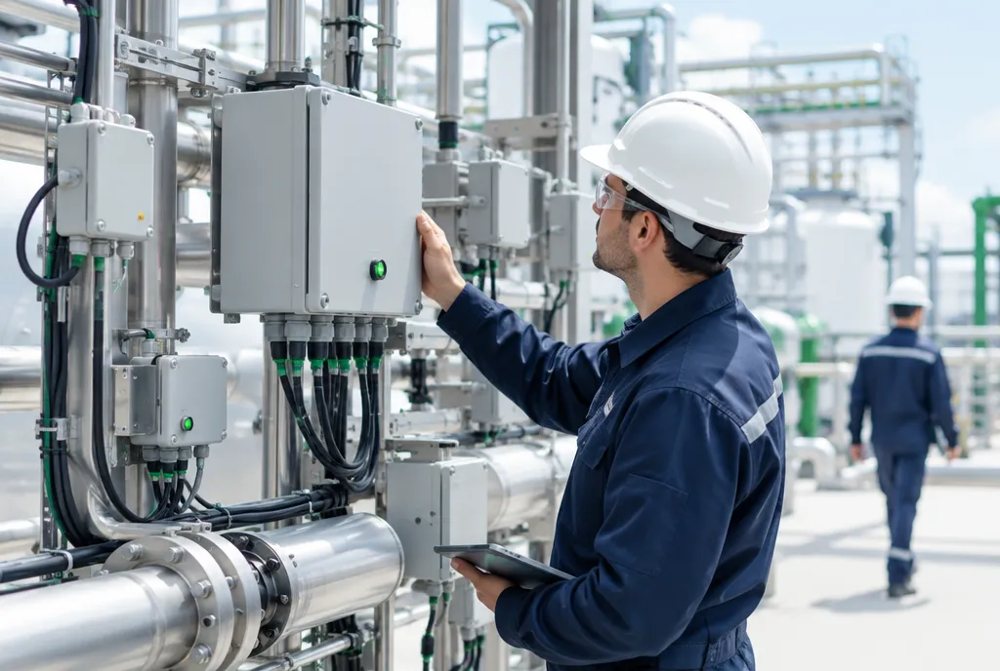
Robbanásveszélyes térben nincs helye a véletlennek.
Részletek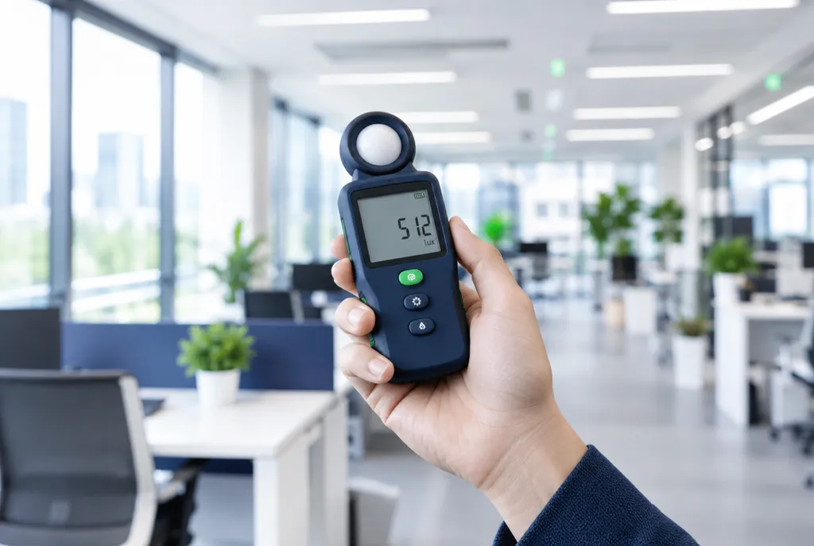
Pontos lux-mérés munkahelyeken és menekülési útvonalakon.
Részletek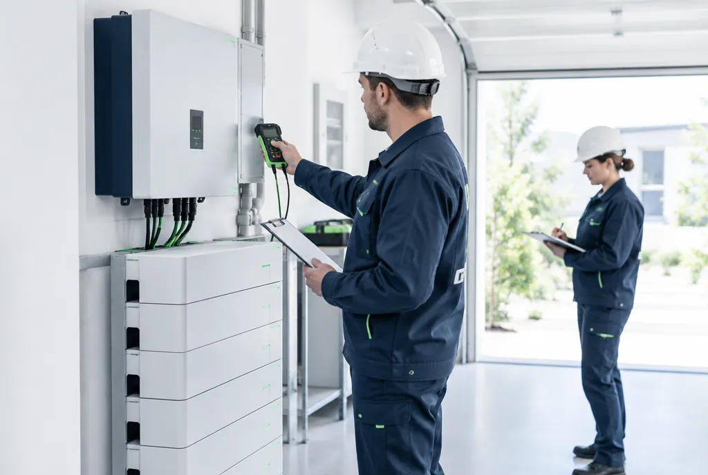
Családi házaktól a napelemparkig – akkumulátoros tárolók és PV-rendszerek felülvizsgálata.
RészletekMegelőző karbantartás és gyors üzemzavar-elhárítás.
Részletek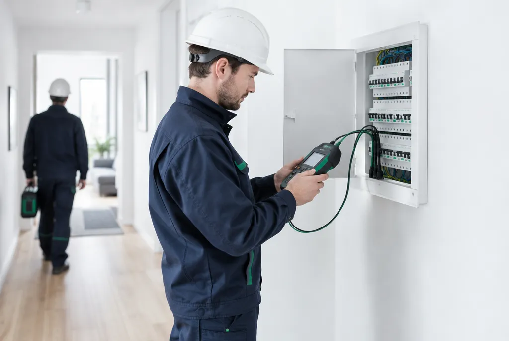
Otthona biztonsága az első – minősítő irattal.
RészletekAdatközpontok felülvizsgálata hőkamerával, az üzemmenet zavarása nélkül.
RészletekElöregedett kondenzátor = tűzveszély és meddődíj. Időben kiszűrjük.
Részletek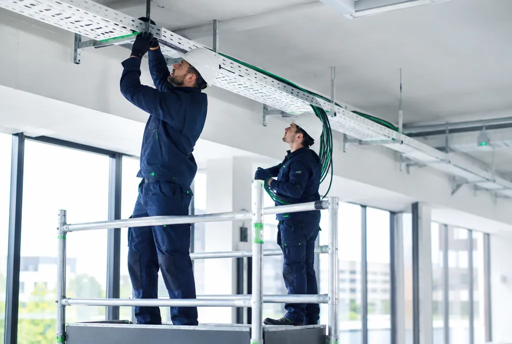
Épület- és technológiai villanyszerelés, erősáram, hálózatépítés – egy kézből.
Részletek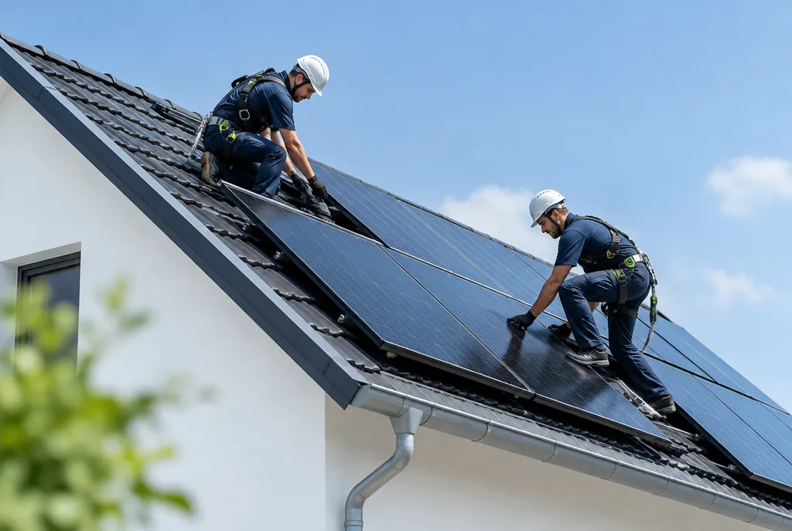
Akkumulátoros tárolók és napelemes rendszerek kivitelezése – tervezéstől az üzembe helyezésig.
RészletekÁtlátható folyamat, kiszámítható határidők.
Űrlapon vagy telefonon – egy munkanapon belül személyre szabott, díjmentes ajánlat.
Egyeztetett időpontban, kalibrált műszerekkel, az üzemmenet zavarása nélkül.
Szabványos jegyzőkönyv 2 példányban – sürgős esetben 48 órán belül.
Hibalista és javítási javaslat, emlékeztető a következő esedékes felülvizsgálatra.
Az LMSZ Műszaki Szolgáltató Kft. a villamos-biztonságtechnika területén végez átfogó felülvizsgálatokat: érintésvédelmi, villámvédelmi és tűzrendészeti (tűzvédelmi) vizsgálatokat, valamint villamos berendezések üzembe helyezését, villamos hálózatok tervezését, szerelését és javítását.
Jogosultsággal rendelkező felülvizsgálók.
Részletes minősítő iratok.
Jogszabályok, szabványok, gyakoriságok – részletes leírás mind a 12 szakterületről.
Mi a VBF, mit vont össze 2020 óta, milyen gyakran kötelező, és mit tartalmaz a Villamos Biztonsági Minősítő Irat.
ElolvasomMit jelent az érintésvédelem, mire terjed ki a felülvizsgálat, milyen jogszabály írja elő.
ElolvasomA villamos berendezések tűzvédelmi felülvizsgálatának tartalma, gyakorisága és jogszabályi háttere.
ElolvasomKülső és belső villámvédelem, felülvizsgálat normál és fokozott védelmi szinten.
ElolvasomEx-berendezések időszakos felülvizsgálata: fokozatok, zónabesorolás, dokumentáció.
ElolvasomMunkahelyi és biztonsági világítás mérése: mit, mivel és milyen szabvány szerint mérünk.
ElolvasomTranszformátorok, alállomások, fázisjavítók karbantartása és üzemzavar-elhárítás.
ElolvasomLakás, családi ház érintésvédelmi vizsgálata: mikor kell, mit mérünk, milyen irat készül.
ElolvasomAkkumulátoros tárolók és PV-rendszerek felülvizsgálata – családi házaknál, cégeknél, napelemparkokban.
ElolvasomAdatközpontok villamos biztonsági felülvizsgálata: betáplálás, UPS, PDU-k, földelés, hőkamerás vizsgálat.
ElolvasomKondenzátortelepek, kontaktorok, szabályozó – mit vizsgálunk, milyen gyakran, és miért kerül pénzbe, ha elmarad.
ElolvasomNapelemes rendszerek és akkumulátoros tárolók kivitelezése – tervezéstől az üzembe helyezésig, minősítő irattal.
ElolvasomÜzletláncoktól az ipari nagyüzemekig – megrendelőink azért választanak újra, mert számíthatnak ránk.
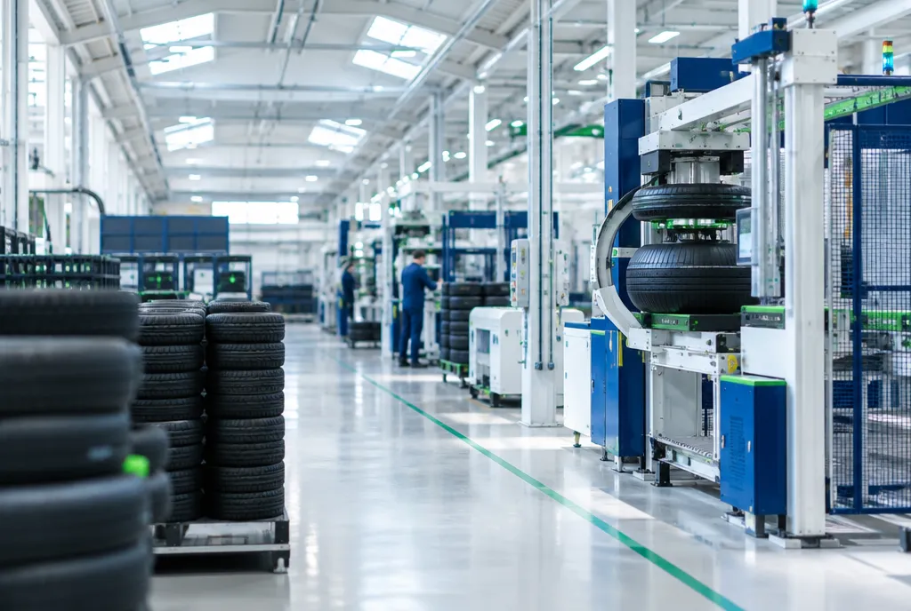
Hét üzemi helyszín villamos tűzvédelmi felülvizsgálata Rácalmáson: alállomás, logisztikai csarnok, folyamathűtési épületek, szilikát raktár és carbon black siló, sealant üzemrész, gázolaj-tároló.
Több mint 20 étterem villamos tűzvédelmi (VBF) és villámvédelmi felülvizsgálata országszerte – Budapesttől Szegedig, Pécstől Mosonmagyaróvárig.
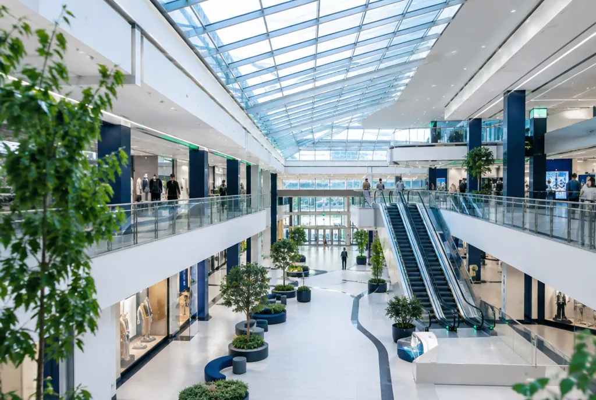
Budapest egyik legnagyobb plázája: villamos biztonsági felülvizsgálatok és a 10 kV / 0,4 kV-os alállomás minősítő irata (2026).
Jogszabályok, gyakoriságok, dokumentumok – röviden. A részletek a tudástárban.
A 40/2017. (XII. 4.) NGM rendelet (VMBSZ) szerint munkahelyeken és ipari létesítményekben 3 évente, lakóépületekben 6 évente – lakás adásvételénél és bérbeadásánál pedig akkor kötelező, ha nincs 6 évnél frissebb minősítő irat. Robbanásveszélyes környezetben a kockázattól függően 1–3 évente. Munkahelyen ezen felül az áram-védőkapcsolókat 3 havonta, a kéziszerszámokat évente kell szerelői ellenőrzéssel vizsgálni (10/2016. NGM). Részletek a VBF-ről
Nem. 2020 óta az OTSZ szerinti erősáramú tűzvédelmi szabványossági felülvizsgálat a villamos biztonsági felülvizsgálat (VBF) része: a tűzvédelmi szemrevételezést és a tűzvédelmi kockázati besorolás ellenőrzését ugyanazon a helyszínelésen végezzük, és ugyanabba a minősítő iratba kerül. Külön maradt a villámvédelem felülvizsgálata (OTSZ: 3 évente ipari és közösségi, 6 évente lakóépületnél) és a biztonsági világítás évenkénti ellenőrzése. Részletek a tűzvédelmi felülvizsgálatról
Az érintésvédelmi rész azt ellenőrzi méréssel, hogy a berendezés véd-e az áramütés ellen – a feszültség alatt álló részek érintése és a meghibásodás (testzárlat) miatt feszültség alá kerülő részek ellen is. A tűzvédelmi rész állapotfelmérés: azt vizsgálja, hogy a szigetelés és a szerelés elöregedése nem jelent-e tűzveszélyt, és a berendezés megfelel-e a helyiség tűzvédelmi kockázati besorolásának. Ma mindkettő a villamos biztonsági felülvizsgálat része – egy helyszínelés, egy Villamos Biztonsági Minősítő Irat.
A felülvizsgálatról Villamos Biztonsági Minősítő Iratot állítunk ki 2 példányban – a mérési eredményekkel, a feltárt hibákkal és a javítási javaslatokkal –, amely 3 évig érvényes. Sürgős esetben, például üzembe helyezés előtt, 48 órán belül szállítjuk.
Igen – sőt, lakás adásvételénél és bérbeadásánál a VMBSZ szerint kötelező is, ha nincs 6 évnél frissebb minősítő irat. A vizsgálat méréssel mutatja meg, biztonságos-e a lakás villamos hálózata: kiderül, ha elöregedett a szigetelés, meglazultak a kötések, vagy hiányzik a FI-relé. Hasznos régi, felújítatlan hálózatnál, villamos felújítás után, valamint ha biztosító vagy bérbeadás igazolást kér. Részletek a lakások felülvizsgálatáról
Ellenőrizzük az elosztótáblát, a kismegszakítókat és biztosítókat, a FI-relé meglétét és működését, a védőföldelést és az egyenpotenciálra hozást (EPH). Mérjük a hurokimpedanciát és a szigetelési ellenállást, és átvizsgáljuk a dugaszolóaljzatokat, kapcsolókat és világítási áramköröket.
Az MSZ EN 62305 szabvány szerint vizsgáljuk a külső villámvédelmet (felfogók, levezetők, földelők, földelési ellenállás) és a belső villámvédelmet, vagyis a többlépcsős túlfeszültség-védelmet, amely a hálózaton bejutó túlfeszültségtől óvja a berendezéseket. Részletek a villámvédelemről
Az MSZ EN IEC 60079-17:2024 szabvány szerint a felülvizsgálatot sújtólég- és robbanásbiztos villamosberendezés-felülvizsgálói jogosultsággal rendelkező szakember végezheti – nálunk ez a jogosultság megvan. A vizsgálat három fokozata: szemrevételezéses, közeli és részletes felülvizsgálat. Részletek a robbanásvédelemről
A DC oldali csatlakozókat, kábelezést és sorbiztosítókat, az inverter működését és csatlakozásait, a modulok és a tartószerkezet földelését, a túlfeszültség- és villámvédelmet, valamint mérjük a szigetelési ellenállást és a védelmeket. Energiatárolókat (BESS) és adatközpontokat is vizsgálunk. Részletek a napelem- és energiatároló-vizsgálatról
Az ajánlatkérés díjmentes: hívjon a +36 30 984 1685-ös számon, írjon az info@lmsz.hu címre, vagy töltse ki az űrlapot – jellemzően egy munkanapon belül válaszolunk. Az ár a létesítmény méretétől és a vizsgálat típusától függ. Budapesten és országosan vállalunk munkát.
Néhány adat, és díjmentes, személyre szabott árajánlattal jelentkezünk – jellemzően egy munkanapon belül.